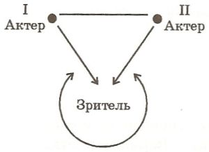
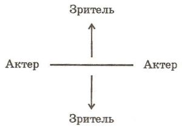

Театр
В конце 80-х годов в ВТО в течение короткого времени существовал интеллектуальный клуб, на собраниях которого актеры, режиссеры, ученые обсуждали проблемы театра, в том числе и философско-теоретические. На одном из таких собраний В.С.Библер сделал сообщение, которое условно можно назвать «Философия театра». Мы публикуем заметки, написанные им к этому сообщению. По сравнению с подготовительными материалами к другим докладам и сообщениям они очень коротки и конспективны, но тем не менее дают отчетливое представление об основной идее. Они состоят из короткого рукописного плана, озаглавленного «К театру. К философии театра»; двух машинописных станиц с текстом, озаглавленным «К «Что есть театр…»» и написанного от руки конспекта сообщения «Театр. Пять диалогов и еще один диалог». Эти материалы сложены в самодельную папочку, на которой – заголовок «Театр». К ней приколота карточка с цитатой из интервью с А. Холлом, которую мы позволили себе поставить в качестве эпиграфа.
Из интервью с американским режиссером Адрианом Холлом («Тринити скуер» в Провиденсе, штат Род-Айленд):
«… Видимо, следует определить, что такое театр, в чем его сущность. Это не текст пьесы, не актерское искусство, не стремления и порывы режиссера. Наиболее просто, на мой взгляд, театр можно определить как контакт и столкновение зрителя с актером…» (Диалог – США, № 32, 1986.)
К театру. К философии театра
I Культура и идея театральности (и – к XX веку).
II Заторможенный диалог театра – в XX веке.
Брехт, <нрзб> Гете. Ср. мои статьи.
Особое значение слова-действия.
Ср. беседу с А. Холлом.
III Театр на грани культур.
(1) Миф и трагедия.
(2) В-округе-храма-бытие
(3) Шекспир и роман.
(4) В <начале?> театра. Не хватает философии…
…Студии
…Юрский … Ср. <нрзб>
…<нрзб>
… «Монологи» Петрушевскойi
_____
К «Что есть театр…»
… 5+1. Диалогизм театра
1. Автор – актер (двойное рождение текста).
2. Исполнитель – маска.
3. Актер – актер… Разная мера жесткости расщепления (и игры) этих полюсов…
4. Актер – зритель…
5. Зритель – соучастник – созерцатель… Зритель – зритель (?)
+1 – Текст – знак действия (ср. Станиславский) – текст – слово – обращение к мысли зрителя. Самостийность слова.
… Жизнь театра и театр жизни (подмостки, работа на зрителя, на себя – со стороны – в «частной» (или общественной) жизни). Совесть. Общественное мнение. Жизнь «на людях»… особое значение социума театральности.
… Типы трагедийности бытия. Преодоление рока … Преодоление силы обстоятельств. Театр и сакральность… Жизнь (судьба) за два часа. Трагедийное построение бытия (ср. композицию греческой трагедии – стасимы, эксод, амехания, катарсис, хор). – Ход в культуру. Театр и социум культуры.
… О театральности и праздничности … Творчество «на людях». Импровизация (сейчас, здесь) по преимуществу. Ср. поэзия, или кино, или живопись…
… Игра (без зрителя, не на зрителя) и – театр.
… Дом театра – дом «в театре», на сцене. Жизнь в двух домах…
___
Вопрос стоит так: в чем смысл театральности в жизни человека.
А. Жизнь на подмостках. Наедине с (внешним – внутренним) зрителем, – мой голос и глаз, отделенный от меня, – значимое Ты, – внутреннее (интериоризация Ты) другое Я. Со-весть. Нравственность и театр. Храм и театр.1
Б. Артистизм – воплощение в другого, – с схранением дистанции, – не формальная терпимость, но – чужой голос во мне.
Артистизм и XX век. Сопряжение различных культур – одновременных и – иных. Ср. А. Блок.
В. Отъединение (отчуждение) единиц – людей в XX веке и связь через театральность.
Г. Театр Брехта и вариативность жизни, особая роль интеллекта. Возвращение к до-действию.
Д. Преодоление абсолютного слияния с эмоциональными стрессами и – театральное остранение. Их торможение.2
Е. Искусственная естественность в театре – основа эстетической эмоции.
Все это: исходя из основных ипостасей театрального диалогизма:
(1) Автор ↔ актеры = двойное творение спектакля.
(2) Актер ↔ актер…
(3) Лицо ↔ маска…
(4) Актер ↔ зритель … (и – проецируемый со сцены – зритель).
(5) Зритель – соучастник; зритель – созерцатель…
(6) Зритель ↔ зритель.
(7) Nota Bene: Действие и (несовпадающая с ним) мысль (слово).
Ориентация на зрение, ориентация на слово. Глаз, спорящий со слухом.
____
Театр. Пять диалогов и еще один диалог
Вступление
Жизнь – театр. Представить свою жизнь – перед собой (1) и перед созерцателями (2)… Жить на людях, но – видеть себя – со стороны, – «из нутра» другого человека… (3)3
Диалог без метафор. Вхождение в иного (в многих) и общение между этими ипостасями – в созерцании.4
Автор ( пьесы ) – актер (автор спектакля )
Два ряда: воображение от письменного текста (действующие лица) и – игра в живом тексте (исполнители).
Несовпадение этих двух планов.6
«Классика» и «интерпретации», слово и действие.7iii Особое значение в XX веке (театр<альность?> прозаических произведений, два театра в одном – Брехт). Как важно подчеркивание зазора, несовпадение двух авторов, двух текстов (пьеса и спектакль). У автора пьеса – полное тождество «действующие лица и исполнители». У актера – их разложение.
Диалог 2. Отделение актера как автора спектакля от актера – исполнителя, диалог.
Режиссер → автор
Режиссер ← актер
Зазор фиксируется и усиливается…8iv
Диалог 3.Актер ↔ действующее лицо. Совпадение и расхождение… Отстранение и вчувствование… Вариативность. «Отчуждение» Брехта. XX век – фиксирование этого зазора, его углубление и усиленное разв<едение?>. Два вектора: от действующего лица → к актеру; от актера → к действующему лицу. Еще момент этого обращения (от действующего лица – к (на) исполнителя). Проблема альтернативы. 9v
Диалог 4 (непосредственный). Актер (действующее лицо) ↔ актер (действующее лицо). Реализация диалогов 1, 2, 3… Их непосредственная жизнь… Отключение (стена) от зала… Но… →
Диалог 5. Актеры – спектакль ↔ зрители.
Два обращения – к другому актеру – к зрителю. Ситуация зрелища. Интериоризация хора – в совесть (NB).
Игра «в стенку» (только актер – актер); в ее отсутствие (актер – актер, через зрителя, по схеме: актер ↔ зритель ↔ актер 2).
СХЕМА 1

В этот диалог очень существенно включение « индукции » (это не диалог, это двойное определение зрителей – как многих отдельных личностей и как «Хора», «Левиафана»…)
И еще – хор перед глазами и – за сценой… (у актеров).
СХЕМА 2

Все эти диалоги в XX веке фиксируются, участники разводятся, диалогизируют между собой …
Но – самое существенное – вписывание этих диалогов в диалог (…«еще один диалог») двух рядов – см. начало (первый диалог) – между словом и действием (действом), внутренним дмалогом и зрелищем.10
Несовпадение (и отождествление) человека с самим собой –
– Эдип-царь; Эдип-индивид («В Колоне»…), знающий и не знающий о своих делах. Он – другой.
– Гамлет-мститель; Гамлет-судья… (ср.)
Без этого диалога нет (нет театра как насущности) всех других диалогов.
Но именно этот момент сейчас исчезает, поэтому «театр» (с маленькой буквы) есть, но трагедии как исторически насущного средоточия, по сути, – нет.
1 Культура со стороны. Храм и – театр (нравственность, совесть). Большое Я, творимое из «я» малого.
2 Театр и социум культуры.
4 → к <…> (рождение действия)
5 Стреллер Дж. С. 115-128.
6 Спор лирического и драматического начал.
7 Ср. Гете.
8 Режиссер – центростремит<лен?>, актер – центробеж<ен?>
Ср. «Берегите ваши лица», «Репетиция – любовь моя»
9 Брехт, с. 113, 145, 146.
10 Лирикой мысли (ее рождением) и социальным включением.
i См.: Петрушевская Л.С. По дороге бога эроса. М., 1993.
ii Стреллер Джорджо – итальянский театральный режиссер. Библер был знаком с его идеями по книге: Стреллер Дж. Театр для людей. Мысли записанные, высказанные и осуществленные. М., 1984. На указанных страницах этой книги Стреллер размышляет о сложном сопряжении драматургии как литературы и как спектакля, о роли режиссера и актера.
iii Возможно, имеются в виду размышления Гете о слове и действии в театре в работе «Шекспир и несть ему конца». Шекспир, считает Гете, обращается не к зрению, а к «внутреннему чувству», до которого «наиболее быстро и верно… доходит слово». «В произведениях Шекспира… одушевленное слово преобладает над чувственным действием.» – Гете И. Об искусстве. М. 1975. С. 410-411.
iv «Берегите ваши лица» – спектакль Театра на Таганке (режиссер Ю. Любимов.) «Репетиция – любовь моя» – книга А. Эфроса.
v Библер указывает страницы книги: Брехт Б. О театре. Сборник статей. М., 1960. Цитату со страницы 113 (о различии эпического и драматического театров) см. с. 000 наст. издания; на с. 145-146 рассказывается о специфике игры актера в технике «отчуждения». Процитируем фрагмент, касающийся альтернативы. «Когда актер выходит на сцену, он, показывая, что делает, должен во всех важных местах заставить зрителя заметить, понять, почувствовать то, чего он не делает; то есть он играет так, чтобы возможно яснее была видна альтернатива, так, чтобы игра его намекала на другие возможности, представляла лишь один из допустимых вариантов. <…> Всякая фраза, всякий жест означает решение; персонаж остается под контролем зрителя, подвергается испытанию.» – указ. соч. С. 145.